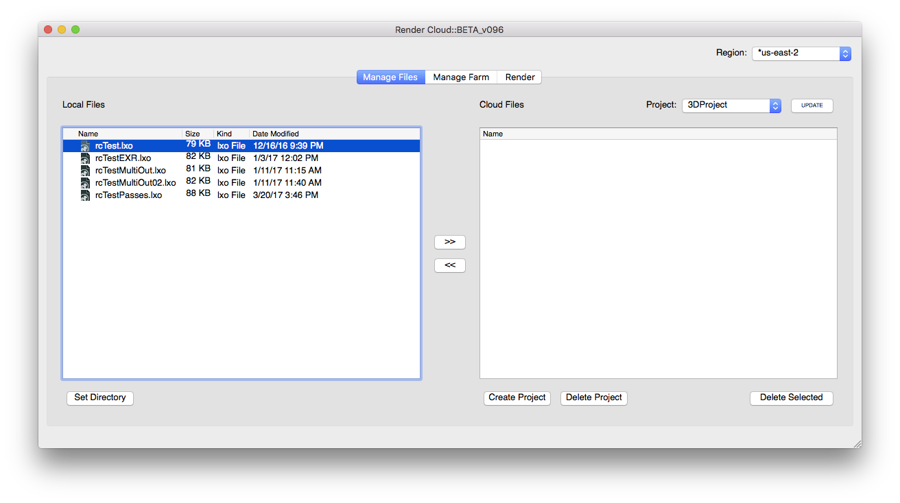
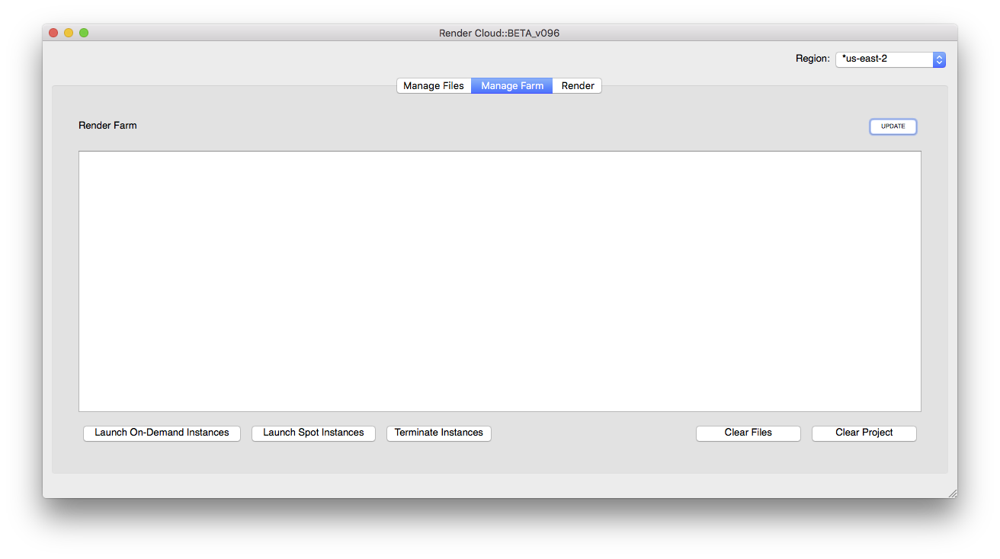
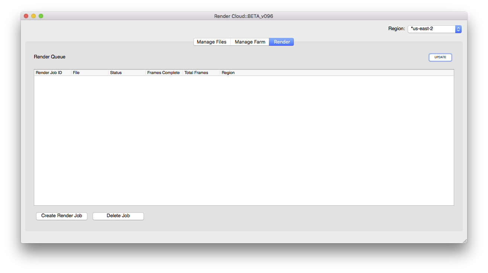
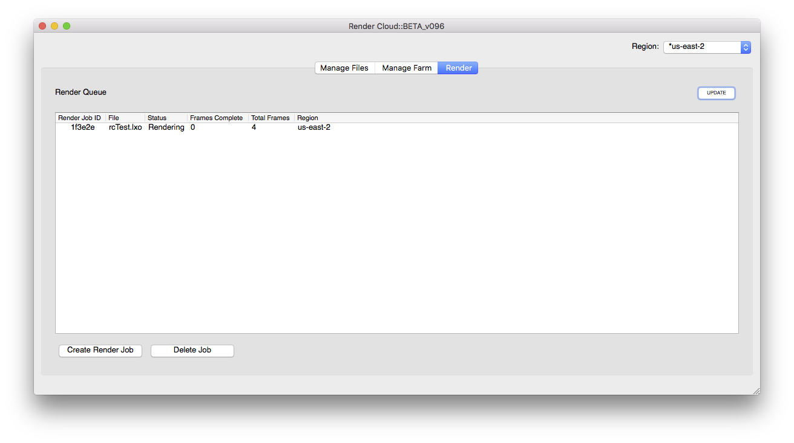
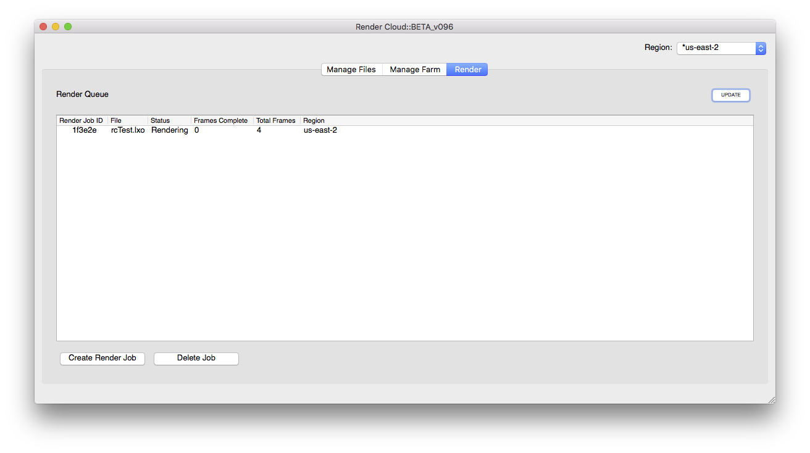

Render Monkey Documentation
Standalone Quickstart
-
Step 1: Select local directory
Click the "Set Local Directory" button to pick the local folder where the file(s) to be rendered are stored.

-
Step 2: Create project
Click the "Create Project" button to create a new project folder for storing your file(s) to be rendered in the cloud.

-
Step 3: Upload files
Select the files you wish to upload in the "Local Files" directory. Then, click the ">>" button to upload the files to the cloud project folder.
-
Step 4: Launch render instances
Click on the "Manage Farm" tab.

Next click on the "Launch Instances" button to select the configuration type for your render farm nodes, and the number of nodes to launch.
You can also set a custom storage size for the render nodes. The default storage size on a render node is 8GB if your scene files exceed this, then enter an appropriate size for your scene.
Once you click "OK" the render nodes should appear in the "Render Farm" list.
-
Step 5: Create render job
Click on the "Render" tab.

Next click on the 'Create Render Job' button to bring up the Render Job dialog.
Here you will select the software to use (if you uploaded more than one), the file to render, frames to render, the name of the output file, whether to render a certain pass and whether to render as a layered exr file.
 Click "OK" to create the render job which and start rendering on the nodes launched in the previous step. As frames are finished, the images will automatically be downloaded since a local directory was chosen in the first step.

Click "OK" to create the render job which and start rendering on the nodes launched in the previous step. As frames are finished, the images will automatically be downloaded since a local directory was chosen in the first step.

Quick Links